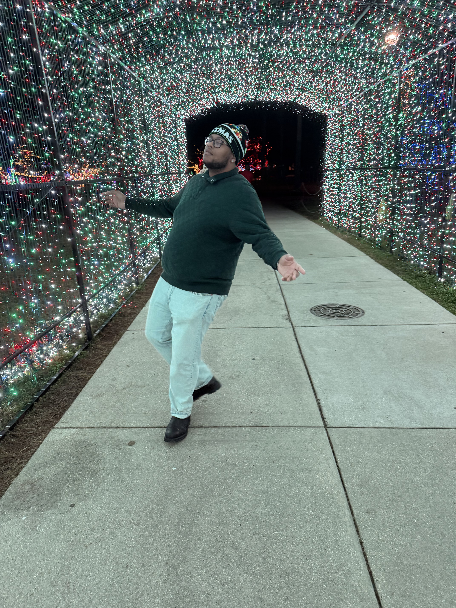

About Me
Hello,
I’m Aquon McDyess, a product developer and creative based in Atlanta. I’ve always enjoyed building things—software, music, or ideas that bring people together in real ways. I’m naturally drawn to the space where creativity meets structure, and most of my work lives right in that balance.
By day, I work in tech, designing and developing modern digital products with a strong focus on clarity, usability, and scale. I like taking complicated problems and breaking them down into systems that actually feel intuitive. For me, how something works matters, but how it feels matters just as much—so design, flow, and intention are always part of the process.
Music is the other side of that equation. As a producer, I’m inspired by emotion, rhythm, and culture, especially the way sound can tell a story without saying much at all. It gives me space to experiment, express, and stay grounded in creativity outside of screens and code.
That same mindset carries over into the things I build beyond music and tech. One of those is my pound cake project—a hands-on, from-scratch craft rooted in patience, precision, and flavor. Making pound cakes gives me a different kind of creative outlet: one that’s physical, slow, and deeply intentional. From perfecting recipes to thinking about presentation and experience, it’s another way I explore quality over shortcuts and substance over hype.
I enjoy building my own projects and brands from the ground up. The early stages are my favorite—shaping the vision, naming things, designing the look and feel, and figuring out how everything connects. I believe good ideas deserve patience and thoughtful execution, not just speed.
This site is a place for me to share what I’m working on and what I’m learning along the way. I’m driven by curiosity, growth, and creating work that feels honest. If something here resonates, that’s love. And either way, I appreciate you being here.
